Connecting to camera
Opening the RTSP stream — this takes a few seconds.
Opening the RTSP stream — this takes a few seconds.

Let's connect your PTZOptics camera. It takes about a minute.
Find it in your router or the camera's web page. The factory default is 192.168.100.88.
Used for the RTSP video stream. Usually admin / admin.
When the subject is lost, the camera returns here. Use 0 if you haven't saved presets yet.
How far the subject can drift before the camera follows. Higher is steadier — 0.17 is a great start.